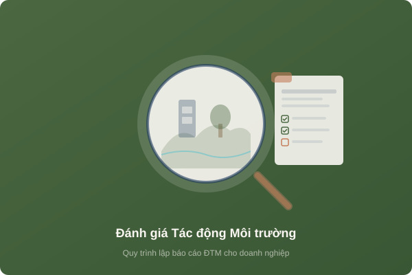

Quy trình lập báo cáo đánh giá tác động môi trường cho doanh nghiệp
Đánh giá tác động môi trường (ĐTM) là công cụ quản lý môi trường quan trọng, giúp dự báo và kiểm soát các tác động tiêu cực từ dự án đầu tư đến môi trường xung quanh. Việc lập báo cáo ĐTM đúng quy trình không chỉ đảm bảo tuân thủ pháp luật mà còn giúp doanh nghiệp tối ưu hóa chi phí đầu tư cho bảo vệ môi trường.
1. ĐTM là gì và tại sao quan trọng?
Đánh giá tác động môi trường (Environmental Impact Assessment - EIA) là quá trình phân tích, dự báo các tác động đến môi trường tự nhiên, kinh tế - xã hội của dự án đầu tư, từ đó đề xuất các biện pháp giảm thiểu tác động tiêu cực.
Tầm quan trọng của ĐTM:
- Là điều kiện tiên quyết để được cấp Quyết định chủ trương đầu tư
- Cơ sở pháp lý để xin cấp Giấy phép môi trường
- Giúp doanh nghiệp nhận diện và quản lý rủi ro môi trường
- Thể hiện trách nhiệm xã hội của doanh nghiệp
2. Đối tượng phải lập báo cáo ĐTM
Theo Điều 30 Luật BVMT 2020 và Nghị định 08/2022/NĐ-CP, các đối tượng phải lập ĐTM gồm:
Nhóm I: Dự án thuộc loại hình sản xuất có nguy cơ gây ô nhiễm MT (khai thác khoáng sản, sản xuất hóa chất, luyện kim, dệt nhuộm, chế biến thủy sản quy mô lớn...)
Nhóm II: Dự án sử dụng đất, mặt nước quy mô lớn; dự án trong khu vực nhạy cảm về môi trường (gần khu bảo tồn, nguồn nước cấp sinh hoạt...)
Lưu ý: Dự án thuộc Phụ lục III Nghị định 08/2022 có quy mô vốn từ 200 tỷ đồng trở lên cũng thuộc đối tượng lập ĐTM.
3. Quy trình chi tiết lập báo cáo ĐTM
Bước 1: Khảo sát thực địa và thu thập dữ liệu
Đoàn chuyên gia tiến hành khảo sát khu vực dự án và vùng lân cận:
- Khảo sát điều kiện tự nhiên: địa hình, địa chất, thủy văn, khí hậu
- Điều tra hiện trạng môi trường nền (nước, không khí, đất, sinh thái)
- Khảo sát điều kiện kinh tế - xã hội khu vực
- Thu thập bản đồ, tài liệu quy hoạch liên quan
Bước 2: Lấy mẫu và phân tích môi trường
Thực hiện quan trắc hiện trạng môi trường nền tại khu vực dự án:
- Lấy mẫu nước mặt, nước ngầm tại các vị trí đại diện
- Đo đạc chất lượng không khí xung quanh, tiếng ồn
- Lấy mẫu đất (nếu cần) tại khu vực dự án
- Phân tích mẫu tại phòng thí nghiệm đạt chuẩn VILAS/ISO 17025
Bước 3: Đánh giá tác động và đề xuất biện pháp
Phân tích các nguồn tác động trong từng giai đoạn: thi công xây dựng, vận hành, và đóng cửa dự án. Từ đó đề xuất các biện pháp giảm thiểu phù hợp bao gồm hệ thống xử lý nước thải, khí thải, quản lý chất thải rắn và chất thải nguy hại.
Bước 4: Lập chương trình quản lý và giám sát môi trường
Xây dựng kế hoạch quan trắc định kỳ, hệ thống giám sát tự động (nếu có), và quy trình ứng phó sự cố môi trường.
Bước 5: Hoàn thiện báo cáo và nộp hồ sơ
Tổng hợp, biên soạn báo cáo ĐTM theo đúng biểu mẫu quy định. Nộp hồ sơ đến cơ quan thẩm quyền (Bộ TN&MT hoặc UBND cấp tỉnh).
4. Nội dung chính của báo cáo ĐTM
- Xuất xứ dự án, chủ dự án, cơ quan tư vấn
- Mô tả dự án (quy mô, công suất, công nghệ)
- Điều kiện tự nhiên, kinh tế - xã hội khu vực
- Đánh giá, dự báo tác động môi trường giai đoạn xây dựng
- Đánh giá, dự báo tác động môi trường giai đoạn vận hành
- Biện pháp phòng ngừa, giảm thiểu tác động
- Chương trình quản lý và giám sát môi trường
- Tham vấn cộng đồng
- Kết luận, kiến nghị và cam kết
5. Thủ tục thẩm định và phê duyệt
Sau khi nộp hồ sơ, quy trình thẩm định diễn ra như sau:
- Kiểm tra hồ sơ: 5 ngày làm việc kể từ ngày nhận hồ sơ
- Thành lập Hội đồng thẩm định: Gồm chuyên gia đa ngành
- Họp thẩm định: Chủ dự án trình bày và bảo vệ báo cáo
- Chỉnh sửa, bổ sung: Theo ý kiến hội đồng (nếu có)
- Phê duyệt: Ra quyết định phê duyệt báo cáo ĐTM
Tổng thời gian thẩm định: 30-45 ngày làm việc (tùy quy mô dự án).
6. Các lỗi thường gặp khiến hồ sơ bị trả lại
- Số liệu quan trắc không đại diện hoặc quá cũ (quá 6 tháng)
- Mô tả dự án không đầy đủ, thiếu bản vẽ thiết kế hệ thống xử lý
- Đánh giá tác động chung chung, không cụ thể hóa cho từng nguồn thải
- Biện pháp giảm thiểu không khả thi hoặc không phù hợp với quy mô
- Thiếu phần tham vấn cộng đồng hoặc tham vấn không đúng đối tượng
- Chương trình giám sát thiếu chỉ tiêu hoặc tần suất không hợp lý
7. Kinh nghiệm để hồ sơ được phê duyệt nhanh
- Lựa chọn đơn vị tư vấn có nhiều kinh nghiệm lập ĐTM trong cùng lĩnh vực
- Đảm bảo số liệu quan trắc mới, chính xác, do đơn vị đủ năng lực thực hiện
- Trình bày rõ ràng, có bản vẽ thiết kế chi tiết hệ thống XLNT, XLKT
- Tham vấn cộng đồng đúng quy trình, lấy ý kiến UBND xã/phường
- Chuẩn bị kỹ phần trả lời cho buổi họp hội đồng thẩm định
Cần hỗ trợ lập báo cáo ĐTM?
NC Environment có đội ngũ chuyên gia giàu kinh nghiệm, cam kết hồ sơ đạt chất lượng và phê duyệt đúng tiến độ.
Liên hệ: 0975 873 866 | Email: letuantran@gmail.com
Nhận Tư Vấn Miễn Phí